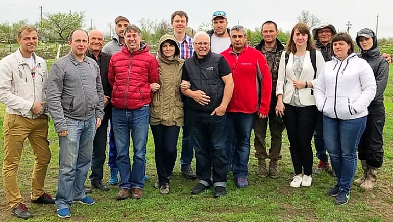
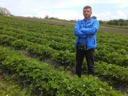
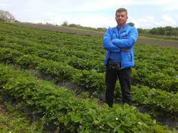
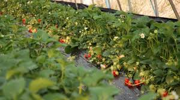
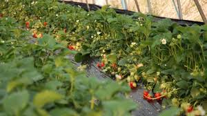

.jpg)

|

|

|

|
|---|---|---|---|
| Вирощуємо та продаємо органічну та екологічно чисту продукцію |
Транспортуємо облаштованим автомобілем в межах України |
Свіжезаморожені ягоди |
Розрахунок зручним для Вас способом |
Про нас
Перший ягідний кооператив створили у Могилівській об'єднаній територіальній
громаді Дніпропетровщини. Тут вирощують малину, полуницю, ожину, лохину,
смородину, агрус, виноград та саджанці.
У кооператив об'єдналися 12 підприємців. Назва його "Перший ягідний".
Загальна ягідна площа - 30 гектарів.

Ягоди

|

|

|
|---|---|---|
Полуниця |
Ожина |
Малина |
| Полуниця має форму маленького сердечка. Кожна усипана маленькими зернятками подібно до того, як земну кулю людьми. |
Все літо красується не високий чагарник - ожина. У цій "малини" ягоди - чорні, з сизим нальотом, а квіти, як у суниці, тільки великі. |
Смачна ягода - це ягода - малина. Але малину збирати не легко, чому? Тому що на ній багато шпильок, вона дуже колюча. |

|

|

|
|---|---|---|
Чорна смородина |
Виноград |
Червона смородина |
| Симпатичні, яскраві ягоди - смачні, кисло солодкі, соковиті ягоди смородини. Смородина перевершує всі види плодів та ягід, за вмістом вітаму С, поступаючись першістю тільки шипшині. |
Солодкі та ароматні ягоди винограду пофарбовані в різні кольори. Тут природа фарб не пошкудувала! Сині і фіолетові, темно-червоні та рожеві, зелені і жовтуваті. |
Яскраві червоні грона червоної смородини ніжних прозорих ягід. Кисла, смачна! Дивишся на них - і так хочеться скуштувати. |
Вирощування
.jpg)
.jpg) 

.jpg)
.jpg) 

Контакти
Адреса:
02000
Київ,
вулиця Генерала Родимцева, 7a,
@gmail.com